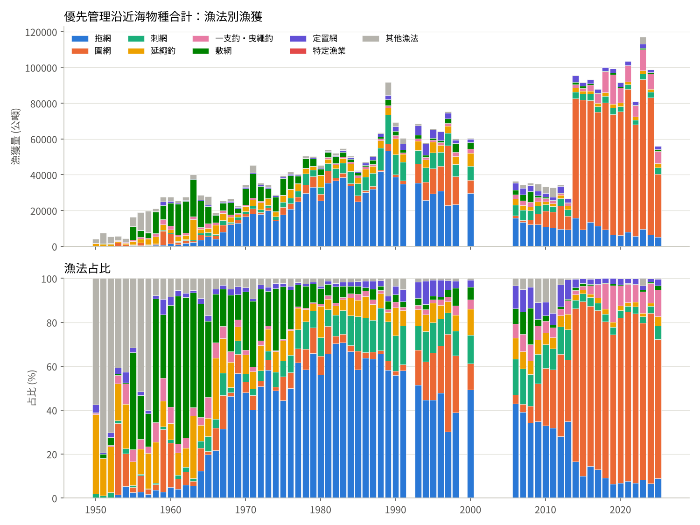
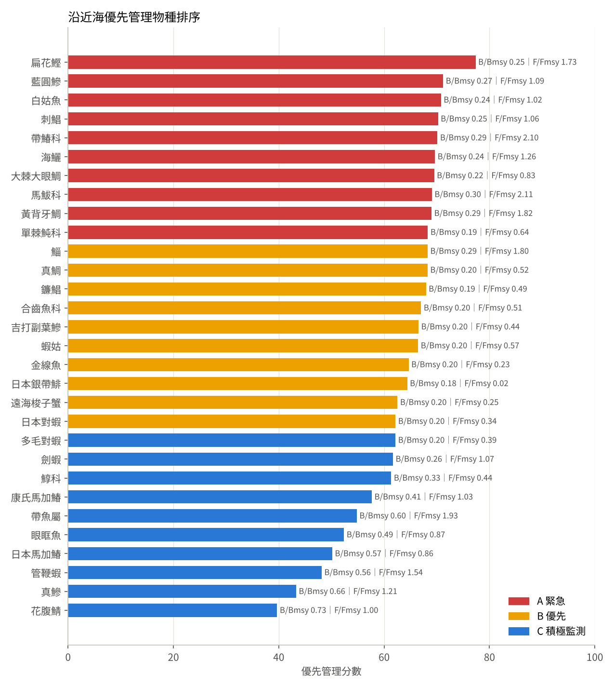

摘要
- 優先管理物種 30 種（沿近海 36 種中選出），依資源量、漁獲壓力、SSP 狀態、本質脆弱度、漁獲衰退與漁業重要性綜合計分，分為三級：
- A 緊急（10）：扁花鰹、藍圓鰺、白姑魚、刺鯧、帶鰆科、海鱺、大棘大眼鯛、馬鮁科、黃背牙鯛、單棘魨科
- B 優先（10）：鯔、真鯛、鐮鯧、合齒魚科、吉打副葉鰺、蝦姑、金線魚、日本銀帶鯡、遠海梭子蟹、日本對蝦
- C 積極監測（10）：多毛對蝦、劍蝦、鯙科、康氏馬加鰆、帶魚屬、眼眶魚、日本馬加鰆、管鞭蝦、真鰺、花腹鯖
- 漁法結構改變：以優先物種來說計，拖網占比由 1980 年代的 63.9% 降到 2015–2025 年的 17.7%；一支釣・曳繩釣由 1.7% 升到 28.9%（主要是夜間燈光釣白帶魚），定置網由 2.2% 升到 5.7%。白姑魚、午仔、烏魚、真鯛、白鯧的主要漁法已由拖網、圍網或延繩釣轉為刺網。
- 崩潰物種集中在底拖漁場：白姑魚、狗母魚、金線魚、大眼鯛、對蝦類、蝦姑、梭子蟹漁獲多不到峰值的 10%，B/Bmsy 約 0.2–0.25；除白姑魚（F/Fmsy 1.02）外，F/Fmsy 已降到 1 以下（Kobe 黃區），顯示漁獲壓力降低後資源仍未恢復。
- 仍在過漁的物種：扁花鰹（F/Fmsy 1.73）、帶鰆科（2.10）、午仔（2.11）、黃背牙鯛（1.82）、烏魚（1.80）、白帶魚（1.93）、管鞭蝦（1.54）等，需要優先降低漁獲壓力。
- 最重要的多物種管理船隊是西南拖網（嘉義、臺南、高雄）；其次為東北拖網與中部拖網、中部刺網。
- 趨勢判讀：8 種的年報組成指標下降（扁花鰹、帶鰆科、海鱺、單棘魨科、鐮鯧、劍蝦、眼眶魚、日本馬加鰆），資源減少訊號較強，應優先降低漁獲壓力。
- 管理主軸
- 分區（劃為西南拖網、東北拖網、中部拖網與刺網、北部拖網、澎湖、西南扒網、東部延繩釣等單元，另有東北扒網與跨界資源）
- 時空（產卵期與產卵場保護、燈火與拖網努力量控制、刺網規範、體長與抱卵限制）
- 生態（底拖生態系、餌料魚、棲地、氣候變遷、放流檢討、CPUE 與 BSM）。
漁法結構的長期變動

| 漁法 | 1950–59 | 1960–69 | 1970–79 | 1980–89 | 1990–2000 | 2006–2014 | 2015–2025 |
|---|---|---|---|---|---|---|---|
| 圍網 | 10.0 | 7.8 | 7.0 | 4.9 | 18.6 | 31.8 | 73.5 |
| 拖網 | 2.4 | 19.4 | 53.0 | 63.8 | 46.5 | 30.1 | 8.9 |
| 刺網 | 1.0 | 3.7 | 6.9 | 13.7 | 13.1 | 10.9 | 3.5 |
| 一支釣・曳繩釣 | 6.0 | 5.3 | 1.2 | 1.7 | 2.5 | 4.9 | 8.7 |
| 延繩釣 | 15.3 | 13.4 | 8.3 | 6.8 | 8.2 | 5.5 | 2.0 |
| 敷網 | 26.2 | 41.0 | 18.7 | 4.3 | 3.5 | 4.3 | 0.6 |
| 定置網 | 3.0 | 2.4 | 1.4 | 2.2 | 5.8 | 7.4 | 2.3 |
| 其他網具 | 10.3 | 1.5 | 0.8 | 1.8 | 1.3 | 0.2 | 0.0 |
| 其他 | 20.9 | 2.4 | 0.9 | 0.5 | 0.3 | 4.7 | 0.4 |
| 地曳網 | 4.9 | 2.9 | 1.8 | 0.3 | 0.1 | 0.0 | 0.0 |
| 特定漁業 | 0.0 | 0.0 | 0.0 | 0.0 | 0.0 | 0.0 | 0.0 |
| 籠具 | 0.0 | 0.0 | 0.0 | 0.0 | 0.0 | 0.0 | 0.0 |
| 鏢漁 | 0.0 | 0.1 | 0.0 | 0.0 | 0.0 | 0.0 | 0.0 |
| 合計（t/年） | 13,060 | 27,094 | 40,132 | 55,228 | 64,713 | 40,481 | 92,807 |
表 1 優先物種各期漁法占比（%）與年平均總漁獲。
1960 年代以敷網（棒受網、焚寄網，主要捕丁香魚）與延繩釣為主；1970–90 年代中小拖網擴張，西部與東北部底棲魚類的漁獲多半來自拖網；2000 年後拖網船數與漁獲下降，刺網、定置網與一支釣占比上升；2014 年起扒網（鯖鰺）成為最大漁法，反映漁具轉換與目標物種改變。
優先管理物種排序

| 排名 | 級 | 物種 | B/Bmsy | F/Fmsy | Kobe | SSP 2025 | 脆弱度 | 占峰值% | 近期主要漁法 | 分數 |
|---|---|---|---|---|---|---|---|---|---|---|
| 1 | A | 扁花鰹 | 0.25 | 1.73 | 紅 | 崩潰 | 35 | 9.8 | 定置網 59%、圍網 24% | 77.4 |
| 2 | A | 藍圓鰺 | 0.27 | 1.09 | 紅 | 崩潰 | 35 | 7.8 | 圍網 80%、拖網 12% | 71.2 |
| 3 | A | 白姑魚 | 0.24 | 1.02 | 紅 | 崩潰 | 38 | 7.9 | 刺網 53%、拖網 34% | 70.8 |
| 4 | A | 刺鯧 | 0.25 | 1.06 | 紅 | 崩潰 | 38 | 9.4 | 拖網 80%、刺網 16% | 70.2 |
| 5 | A | 帶鰆科 | 0.29 | 2.10 | 紅 | 復育中 | 38 | 15.8 | 延繩釣 86%、拖網 12% | 70.1 |
| 6 | A | 海鱺 | 0.24 | 1.26 | 紅 | 崩潰 | — | 8.3 | 延繩釣 26%、刺網 24% | 69.7 |
| 7 | A | 大棘大眼鯛 | 0.22 | 0.83 | 黃 | 崩潰 | — | 4.7 | 拖網 37%、一支釣・曳繩釣 31% | 69.5 |
| 8 | A | 馬鮁科 | 0.30 | 2.11 | 紅 | 復育中 | 34 | 22.3 | 刺網 66%、拖網 25% | 69.1 |
| 9 | A | 黃背牙鯛 | 0.29 | 1.82 | 紅 | 復育中 | 44 | 17.5 | 一支釣・曳繩釣 41%、延繩釣 39% | 69.0 |
| 10 | A | 單棘魨科 | 0.19 | 0.64 | 黃 | 崩潰 | — | 2.3 | 刺網 32%、敷網 24% | 68.3 |
| 11 | B | 鯔 | 0.29 | 1.80 | 紅 | 復育中 | 34 | 15.5 | 刺網 73%、圍網 12% | 68.3 |
| 12 | B | 真鯛 | 0.20 | 0.52 | 黃 | 崩潰 | 44 | 1.8 | 刺網 39%、延繩釣 30% | 68.3 |
| 13 | B | 鐮鯧 | 0.19 | 0.49 | 黃 | 崩潰 | 38 | 1.7 | 刺網 39%、拖網 31% | 68.0 |
| 14 | B | 合齒魚科 | 0.20 | 0.51 | 黃 | 崩潰 | 34 | 2.5 | 拖網 60%、刺網 37% | 67.0 |
| 15 | B | 吉打副葉鰺 | 0.20 | 0.44 | 黃 | 崩潰 | 35 | 2.6 | 拖網 48%、刺網 29% | 66.5 |
| 16 | B | 蝦姑 | 0.20 | 0.57 | 黃 | 崩潰 | — | 3.8 | 拖網 95% | 66.5 |
| 17 | B | 金線魚 | 0.20 | 0.23 | 黃 | 崩潰 | 38 | 0.7 | 拖網 68%、一支釣・曳繩釣 16% | 64.7 |
| 18 | B | 日本銀帶鯡 | 0.18 | 0.02 | 黃 | 崩潰 | — | 0.1 | 敷網 94% | 64.4 |
| 19 | B | 遠海梭子蟹 | 0.20 | 0.25 | 黃 | 崩潰 | 22 | 1.4 | 拖網 68%、刺網 24% | 62.5 |
| 20 | B | 日本對蝦 | 0.20 | 0.34 | 黃 | 崩潰 | 15 | 1.7 | 拖網 88%、其他 6% | 62.2 |
| 21 | C | 多毛對蝦 | 0.20 | 0.39 | 黃 | 崩潰 | 15 | 2.1 | 拖網 62%、刺網 38% | 62.2 |
| 22 | C | 劍蝦 | 0.26 | 1.07 | 紅 | 過度開發 | 15 | 10.2 | 拖網 94% | 61.7 |
| 23 | C | 鯙科 | 0.33 | 0.44 | 黃 | 崩潰 | 38 | 1.9 | 拖網 96% | 61.4 |
| 24 | C | 康氏馬加鰆 | 0.41 | 1.03 | 紅 | 復育中 | 48 | 23.0 | 刺網 30%、一支釣・曳繩釣 19% | 57.7 |
| 25 | C | 帶魚屬 | 0.60 | 1.93 | 紅 | 完全開發 | 46 | 61.7 | 一支釣・曳繩釣 62%、拖網 13% | 54.8 |
| 26 | C | 眼眶魚 | 0.49 | 0.87 | 黃 | 復育中 | 38 | 28.0 | 圍網 85%、拖網 8% | 52.4 |
| 27 | C | 日本馬加鰆 | 0.57 | 0.86 | 黃 | 復育中 | 48 | 25.0 | 刺網 40%、定置網 36% | 50.2 |
| 28 | C | 管鞭蝦 | 0.56 | 1.54 | 紅 | 完全開發 | — | 60.2 | 拖網 90%、其他 8% | 48.2 |
| 31 | C | 真鰺 | 0.66 | 1.21 | 紅 | 完全開發 | 35 | 65.3 | 圍網 75%、拖網 15% | 43.3 |
| 32 | C | 花腹鯖 | 0.73 | 1.00 | 紅 | 完全開發 | 35 | 74.6 | 圍網 95% | 39.7 |
表 2 優先管理物種清單。
各物種漁法變動與管理建議
各物種的漁法變動與保育管理建議，已併入「魚種資源評估與管理建議」頁面，列在每個物種基本資訊的下方。點選物種名稱即可前往。
跨洋區物種（參考）
以下物種的資源狀態須以 WCPFC、ISC 等區域漁業組織的評估為準，臺灣沿近海漁獲只是其中一部分。表中數值僅反映臺灣沿近海份額的變化。
| 物種 | B/Bmsy | F/Fmsy | Kobe | SSP | 脆弱度 | 主要漁法 |
|---|---|---|---|---|---|---|
| 大目鮪 | 0.19 | 1.11 | 紅 | 崩潰 | 52 | 延繩釣 97% |
| 雨傘旗魚 | 0.31 | 2.03 | 紅 | 復育中 | 60 | 延繩釣 45% |
| 黃鰭鮪 | 0.28 | 1.56 | 紅 | 復育中 | 52 | 延繩釣 88% |
| 立翅旗魚 | 0.34 | 1.43 | 紅 | 復育中 | 60 | 延繩釣 53% |
| 黑皮旗魚 | 0.36 | 1.41 | 紅 | 復育中 | 60 | 延繩釣 84% |
| 劍旗魚 | 0.39 | 1.42 | 紅 | 復育中 | 60 | 延繩釣 99% |
| 鬼頭刀 | 0.38 | 1.28 | 紅 | 過度開發 | 24 | 延繩釣 80% |
| 紅肉旗魚 | 0.42 | 1.54 | 紅 | 復育中 | 60 | 延繩釣 69% |
- 鬼頭刀：延繩釣占 80%，近年定置網占比升至 11%。新港鬼頭刀延繩釣 FIP 已獲 Comprehensive 評等，2026 年 4 月起出口須附捕撈溯源文件；建議持續提高觀察員與電子觀察員涵蓋率，並記錄海龜與鯊魚混獲。
- 雨傘旗魚：延繩釣、鏢漁與刺網並存。東部是重要漁場，建議與 ISC／WCPFC 評估結果比對，並在東部定置網與刺網推動釋放活體與記錄體長。
- 黃鰭鮪：沿近海延繩釣占 88%。資源狀態應以 WCPFC 中西太平洋黃鰭鮪評估為準，國內管理重點是配額內的漁獲回報與小型魚比例。
- 大目鮪：幾乎全由延繩釣捕獲。CMSY 顯示臺灣沿近海份額偏低，但這反映船隊與漁場變動，應以 WCPFC 評估判讀。
- 旗魚類（黑皮、立翅、紅肉、劍旗魚）：以延繩釣與東部鏢旗魚為主，鏢漁占比已明顯下降。建議與 ISC 旗魚評估及 WCPFC 措施同步，並在國內推動旗魚體長與漁獲位置回報。
- 鯊魚類（鋸峰齒鯊、真鯊屬）：延繩釣混獲為主。須持續執行鰭身完整上岸，並依 WCPFC 鯊魚措施管理；真鯊屬本質脆弱度高（約 70 分），建議優先記錄種別。
綜合管理建議
區域策略
- 西南拖網：是最重要的多物種管理單元，包括刺鯧、金線魚、狗母魚、大眼鯛、白鯧、對蝦類、蝦姑、梭子蟹、劍蝦。
- 東北拖網：包括白姑魚、刺鯧、大眼鯛、狗母魚、日本對蝦、管鞭蝦、蝦姑、黃背牙鯛、白帶魚、劍蝦。與東北扒網（鯖鰺）是不同的漁具與船隊，應分開設定努力量。
- 北部拖網：劍蝦、白姑魚的核心卸魚地。
- 中部拖網與刺網：包括白鯧、午仔、烏魚、扁花鰹、日本馬加鰆、白姑魚。河口育幼場與雙船拖網是主要壓力來源。
- 澎湖：拖網、圍網、延繩釣，包括土魠、海鱺、真鯛、藍圓鰺；多個物種（藍圓鰺、海鱺、真鯛、土魠）的澎湖占比下降，可能與澎湖船隊縮減有關。
- 西南扒網：眼眶魚、吉打副葉鰺與部分藍圓鰺，需與東北扒網分開管理。
- 東部延繩釣：帶鰆科與鬼頭刀、旗魚，東部定置網的管理需要另外採樣。
- 東北扒網：花腹鯖、真鰺、藍圓鰺、烏魚；以「鯖鰺漁業」單元設定船數與燈光功率上限。
- 跨界資源：烏魚、土魠、日本馬加鰆、鯖鰺類與剝皮魚等跨越臺灣海峽或東海的資源，需要兩岸及區域合作才能有效管理。
捕撈時空策略
- 保護產卵期與產卵場：烏魚冬季南下洄游、土魠冬季聚集、鯖鰺冬春產卵、白鯧與午仔春夏淺海產卵。建議以季節性禁漁或分區輪休保護，並以水溫或漁況指標動態調整日期。
- 管理燈火漁業：白帶魚、丁香魚、鯖鰺、鎖管都依賴燈光作業。建議設定燈光功率上限並登記作業船數，以控制實際有效努力量。
- 控制拖網努力量：已有 3 浬內禁止拖網、12 浬內禁止 50 噸以上拖網。建議再加上作業天數或船數上限、加大網袋網目、裝設分隔網，並設置底拖禁漁示範區。
- 規範刺網：刺網是多種崩潰物種近年的主要漁法（白姑魚、午仔、烏魚、真鯛、白鯧）。建議登記網長、網目與作業時間，並在產卵季限制淺海刺網。
- 體長與抱卵限制：沿用蟳蟹類「體長下限＋抱卵禁捕」模式，擴大到土魠、真鯛、赤鯮、午仔等高價魚種，並以港口抽樣評估成效。
生態策略
- 以生態系為基礎的漁業管理：將底拖魚群（白姑魚、金線魚、大眼鯛、狗母魚、對蝦類）視為同一生態系單元，以減少底拖對棲地的總干擾為目標。
- 保護餌料魚：丁香魚、花鰹類、藍圓鰺是掠食魚與海鳥的食物來源，利用目標應比一般魚種保守。
- 保護棲地：河口、藻場、礁區與砂泥底育幼場需要納入海岸開發與海洋保護區規劃。
- 因應氣候變遷：增溫使烏魚等洄游魚種的路徑與漁期改變，管理措施應保留依環境指標調整的彈性。
- 檢討放流成效：真鯛、黑鯛、對蝦類等放流物種，需評估回捕率與遺傳影響，避免以放流取代管理。
- 資料與評估：以港口分縣市、分漁法資料建立 CPUE，改跑 BSM；以漁獲體長組成監測補充量，並分開記錄扁花鰹、圓花鰹及其他合併項目。
建議推動順序
- 第 1 年：依管理單元（優先為西南拖網、東北拖網、中部拖網與刺網）建立努力量基線（船數、作業日、燈光功率）；針對同步下降的 8 種（海鱺、剝皮魚、劍蝦、白鯧、眼眶魚、扁花鰹、日本馬加鰆、帶鰆科）優先降低漁獲壓力；港口採樣加入月份、作業位置與定置網、焚寄網樣本；在白姑魚、午仔、白鯧的淺海產卵場試辦春夏刺網輪休；擴大體長限制到土魠、真鯛、赤鯮。
- 第 2–3 年：設置 1–2 處底拖禁漁示範區並監測恢復；評估鯖鰺 2–3 月產卵期分區休漁；取得航次或作業天數後，以港口資料建立 CPUE，改跑 BSM 校正 CMSY 結果。
- 第 3–5 年：依監測結果調整禁漁期與努力量上限；推動烏魚、土魠、鯖鰺等跨界資源的兩岸與區域資料交換。
資料限制
- 年報 1989 年與 2014 年有物種與漁業分類調整，部分物種的漁法變化含有分類轉換的成分（例如 2014 年起扒網取代巾著網、2015 年金線魚漁獲驟降）。
- CMSY++ 僅用漁獲資料，末年 B/k 主要由先驗決定；漁獲下降也可能來自船隊縮減與漁場限制，結果可能偏悲觀。
參考資料
Froese R., Kesner-Reyes K. (2002) Impact of fishing on the abundance of marine species. ICES CM 2002/L:12；Kleisner K. et al. (2013) Fish and Fisheries 14:293–311；Froese R. et al. (2023) CMSY++ User Guide.